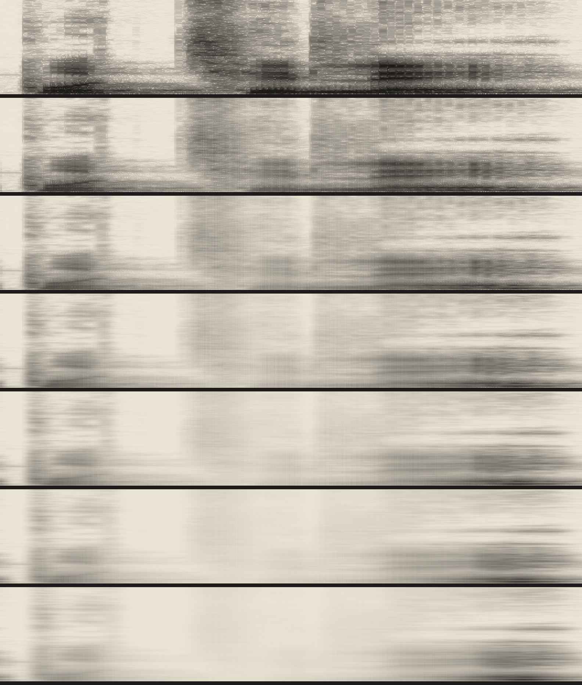

<meta charset=utf-8><meta name=viewport content="width=device-width,initial-scale=1"><title>Pochile</title>
<style>body{margin:0;background:#ece6d6;color:#1e1c1a;font-family:Georgia,serif}main{max-width:640px;margin:2rem auto;padding:0 5vw;line-height:1.55}img{max-width:100%;display:block;margin:1.5rem 0}</style>
<main><p>ପୋଛିଲେ (pochile), Odia, a verb form of wiping, said once by a stranger for a word archive: 1.2 seconds. Its spectrogram, then six wipes with the cloth always going the same way. The last syllable lasts longest.</p>
<p><a href="index.html">Back</a></p></main>
